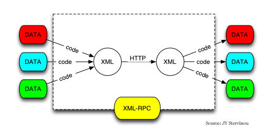

October 06, 2003
关于XML-RPC

“基于internet标准的简单的跨平台分布式计算”是XML－RPC的口号。
XML-RPC是一个规范，遵循这个规范的实施，能让运行在不同的操作系统上不同的运行环境里的应用程序，通过互联网调用对方的过程（precedure）。
这种远程调用，通过HTTP进行传输，用XML进行编码。XML-RPC被设得尽可能简单，但能传输、处理及返回复杂的数据结构。

Posted by Hilton at October 6, 2003 02:28 PM | TrackBackComments
不太懂
Posted by: QQ吧精彩 at December 30, 2003 01:06 PMmeta:
meta- comes from Greek,where it has the meanings“after,along with,beyond,among,behind.”
come from Wbster's dictionary of American English.
More details are in the other dictionaries. They will tell you all what you want to konw.:)
“相当然”――想当然
我也“吹毛求‘屁’”一回――我很记仇的哦！；）
还有，你太客气啦！只要以后你多教我些东东就成。:)
经你提醒，刚看完。
“Metaphysic”，意思是“物理学之后”，而我确实对它望文生义了。之前，我把meta当“元”来理解，"metaphysic"我错误地理解为“元物理”了，便相当然理解为“关于物理和物质本元的研究或理论”。
多亏你的善意提醒，帮助我正确地理解了“形而上学”的概念，才不致使我一错再错，最终贻笑大方。
非常感谢！
Posted by: Hilton at October 6, 2003 08:55 PM没有啊！
我说的可是实话。
拭目以待。
ps:看了形而上学没？；）
这个总算能看懂一点了，要好好学。；）
Posted by: hanyufen at October 6, 2003 08:23 PMPost a comment